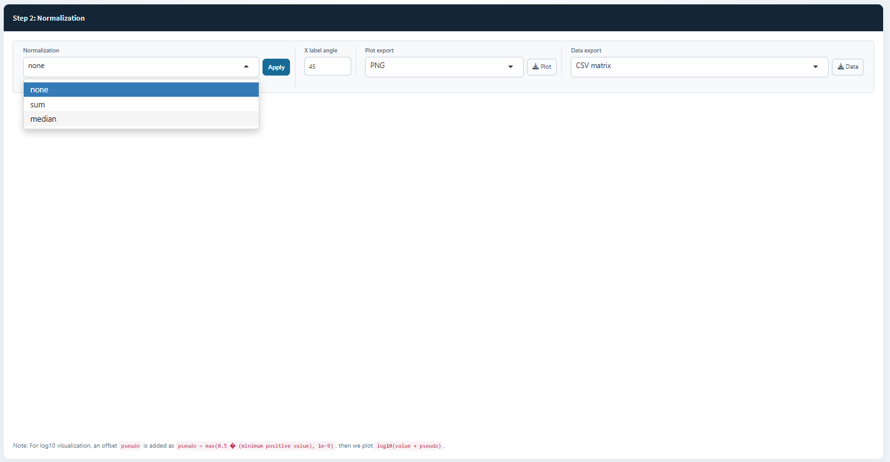
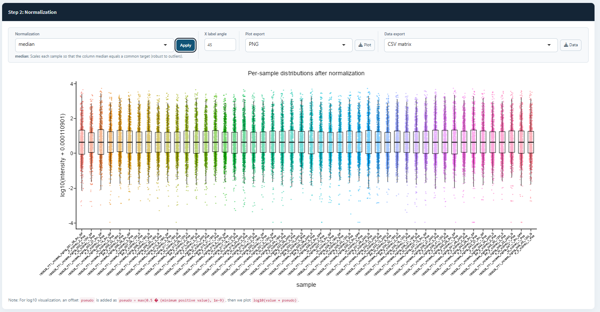

Normalization
Normalize lipid abundances, review sample distributions, and export your data.
Normalize abundance data
After importing your lipidomics data and reviewing the selected samples, open 2. Normalization from the sidebar.
Choose a method
| Method | Operation |
|---|---|
none | Retains the input abundance values. |
sum | Scales each sample by its total lipid abundance. The default target is the median of the sample totals. |
median | Scales each sample by its median lipid abundance. The default target is the median of these sample medians. |
Choose the method appropriate for your experimental design and record it with your results.
- Select
none,sum, ormedianunder Normalization. - Click Apply to apply the selected method and display the abundance distributions.
- Review the distributions across samples. Adjust X label angle if sample names overlap.


For the example below, select median and click Apply. Each box summarizes the lipid abundance distribution for one sample. The black lines show the medians after scaling to a common target.


The distribution plot displays log10(value + pseudo), with pseudo = max(0.5 × minimum positive value, 1e-9). This transformation is used for the distribution display.
Export the plot and data
Choose a format under Plot export and click Plot to save the figure. To download the abundance matrix, select CSV matrix under Data export and click Data.